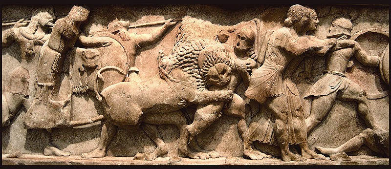

A Arte na Antiguidade se refere à arte desenvolvida pelas civilizações antigas após a criação da escrita. A Arte na Antiguidade se estende até o período da Arte Paleocristã, em que foram produzidas as primeiras expressões artísticas do cristianismo.
No Crescente Fértil, floresceu, no mesmo período que o Império egípcio, a civilização mesopotâmica. O termo Mesopotâmia significa "região entre rios", pois está situada entre os rios Tigre e Eufrates, onde predominavam condições semelhantes às do Egito. A cultura mesopotâmica conheceu um relativo desenvolvimento das artes plásticas, principalmente pelo fato de que, não havendo interferência religiosa, os artistas tinham plena liberdade de expressão. O apogeu artístico dos mesopotâmicos foi a arquitetura, que se destacou pelos zigurates, torres em forma de pirâmide. Os zigurates tinham sete andares de seis metros de altura cada um. Tamanha altura simbolizava a crença mesopotâmica que os deuses habitavam nas alturas. A construção dos zigurates se deu a uma série de soluções arquitetônicas originais, tais como a abóbada e o arco, invenções babilônicas.
A Babilônia - cidade na mesopotâmia e berço da arte na antiguidade - foi uma cidade cujo esplendor ofuscava todas as outras do Oriente Médio. Durante o reinado de Nabucodonosor, foram feitas construções monumentais como a Torre de Babel e os Jardins Suspensos da Babilônia. A Torre de Babel tinha noventa metros de altura. Os Jardins Suspensos da Babilônia é uma das Sete Maravilhas do Mundo Antigo. Os Jardins eram compostos de quatro terraços de tijolo erguendo-se sobre o rio Eufrates.
Leia mais...